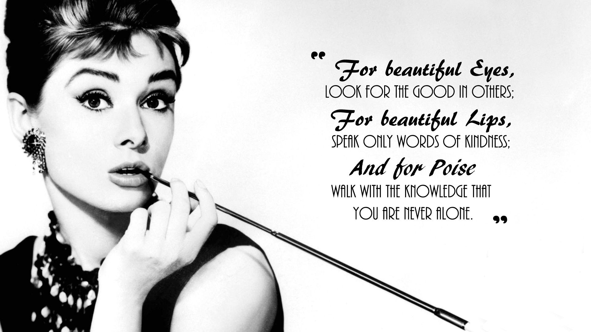
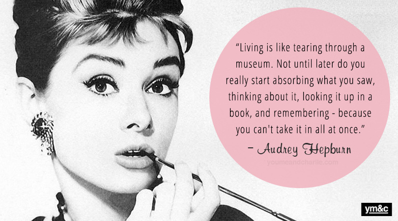

Audrey Hepburn
Audrey Hepburn (4 May 1929 - 20 January 1993) was born in Brussels, Belgium, but her nationality is British. Her father, Joseph Victor Anthony Ruston, is a British; and her mother, Baroness Ella van Heemstra, is a Dutch aristocrat. Hepburn spoke several languages, including English, French, Dutch, Italian, Spanish, and German. She died at age 63 from Appendiceal cancer. Some of her famous works are Sabrina (1954), The Nun's Story (1959), Breakfast at Tiffany's (1961), Charade (1963), My Fair Lady (1964), and Wait Until Dark (1967).
Hepburn's famous quote


Known For